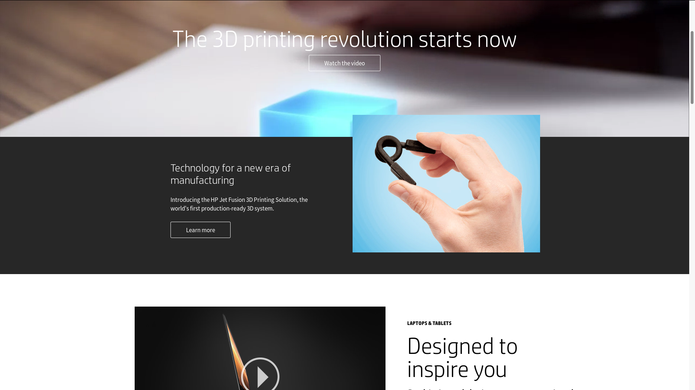
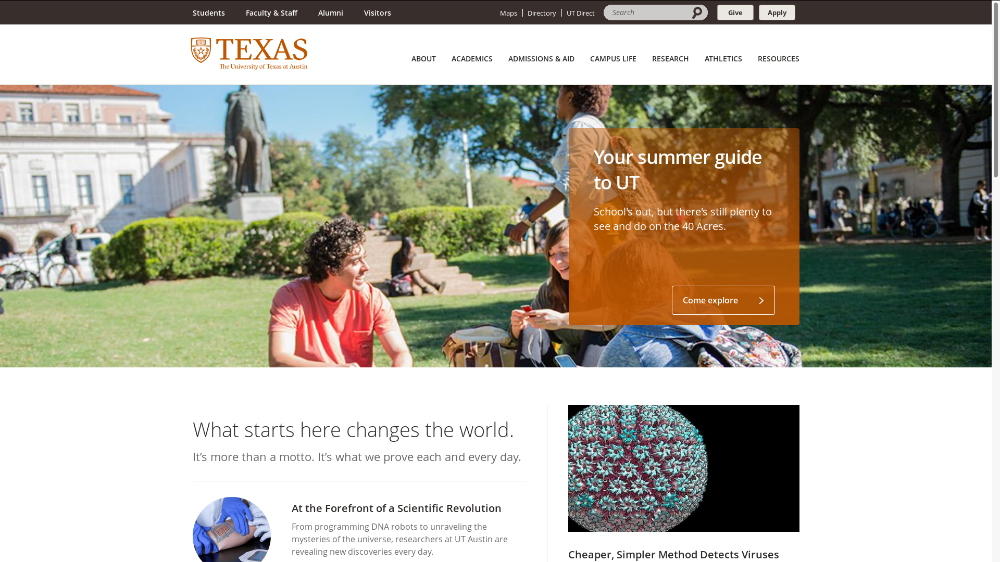
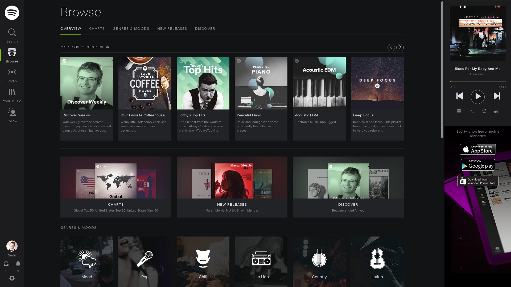

contact me
contact meThis Website - - about it
This website was written and is maintained by me. It is composed purely of good old HTML and CSS, with a little Javascript mixed in. I wanted to write it completely by hand as a sort of challenge to myself, to see if I was familiar enough with the basics of web development to get it done, and also because I wanted to have complete and total control over its look and feel.
I purchased this domain name from Google Domains and I am hosting it on Github Pages. Hosting on Github is convenient because all I have to do to update it is push my repo, and all the code goes where it needs to and is open for anyone to see (check it out here). Also, it's free!
The icons were made by me.
What's up with the tagline?
It's accurate - this website has nothing to do with Pokemon. But really, the primary reason that little subheading is there is because it looks good. Its origin is in the first version of this website - www.pokemonrevolution.me. I was at a 24-hour coding event in Kansas City in 2015, and my team was making a game that involved Pokemon making humans fight in a play on the classic video games that involve humans making Pokemon fight. Namecheap.com was also having a deal where participants in this event could register a free .me domain. We wanted to make a website for our game... so I registered pokemonrevolution.me. The project ended up not going anywhere, but I still used the domain for a while for other things. I wanted to make the website look good, so I made a banner at the top and came up with that little slogan. I purchased a more professional domain when I got around to the modern incarnation of this website, but the banner lives on as a slick looking sign of how this website has evolved.
As I mentioned, the original website was registered with Namecheap, and it was hosted on Google Drive. Google has since removed webhosting capabilities from Drive, but it was nice for a while.
My thoughts on the design process
See, I have a philosophy when it comes to user interfaces. A UI needs to be simple enough that it is intuitive, but not so simple it doesn't actually accomplish what it is supposed to. In coming up with the design of this website, I paid careful attention to the layout of other websites I commonly visited, and I thought about what kind of experience I had with these websites. Above all, I wanted to achieve the concise and efficient delivery of information - but in a way that looked really slick.
There are three common layouts I noticed among websites - not to say that there aren't websites that deviate from these patterns, but these are the ones I took special notice of.
The 'HTML5' Look
Websites of this style are fairly common nowadays, although I think people are starting to realize this isn't a great design. A website of this style is sometimes only one page, or will have a few pages of the same layout. All the information in the page, including links, pictures, comment boxes, embedded videos... is laid out in one, long page you scroll down. It will usually have bright colors, animations, and other flashy graphics, which is why I associate it with HTML5.

www.hp.com at the time of writing this - an example of the HTML5 look
I find this style annoying, because it doesn't index information in an intuitive way. You have to scroll through the whole thing to try to find what you want, and since the amount of actual content on the page is usually sacrificed for the sake of looking good, websites that take this form are often frustratingly uninformative. This might make a good design for something like a brief introduction to a product, but if I want more detailed information about a hackathon, the hackathon website should not be organized in this way.
This could also be a fine design for mobile websites, where the screen is so much smaller a completely different design is necessitated, but just because it works well on a mobile device doesn't mean it will in a normal browser. Overall, this is a trend I have tried to avoid.
The Labyrinth
If you've ever applied to college you'll know what I'm talking about here. Go to any college website, and it doesn't matter what you're looking for - statistics about getting it, detailed bios of the professors, what the requirements are to apply - and it will not be easy to find. This is because they have so much information, but they don't index it properly. They don't think about what people coming to the website will actually be looking for, so you get a bunch of links to pages that don't really fit what you're trying to find. They have too much information to easily keep track of, so you end up with duplicate pages or broken links or multiple pages that describe the same thing but in different contexts. Trying to do research on a school can lead you into a vast maze of subdomains and pages you don't have access to.

www.utexas.edu is especially guilty of this, I've found
There doesn't seem to be anything wrong with this style of website, at first glance. But again, when a focus on how the website looks on the surface takes precedence over efficiently organizing information, it leads to an extremely frustrating experience for the user.
Columns
So what about websites that do a good job with their layout? I've found that I have the best user experience when websites are laid out in columns, with navigation moving from the left to the right. What do I mean by this? I think Spotify is a great example.

Mmmm, that looks good
Base navigation is in a column on the far left. This is good because no matter where you navigate within the website, the menu is right there, unchanging. The main space in the center is where all the action happens. With Spotify specifically, as you navigate through menus, previous pages slide to the left and sort of pile up, so you can see where you just were and easily get back to it. And finally, the far right pane has the most detailed and low level information: what song is playing, and the relevant controls. I'm not claiming this layout it superior to any other in every way, but I always find websites of this design to by easy and pleasant to use. Other examples of this style include GroupMe, Discord, and this website (which I specifically modeled with these ideas in mind).